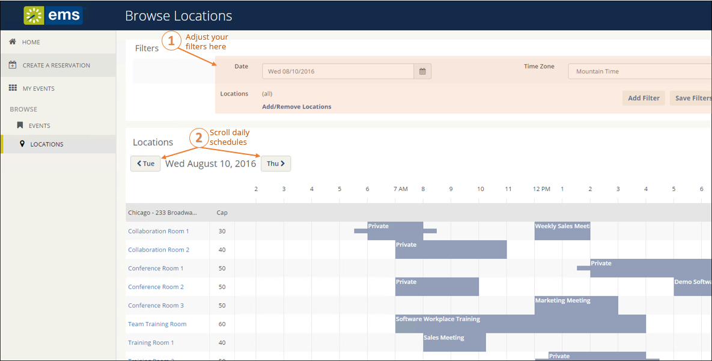
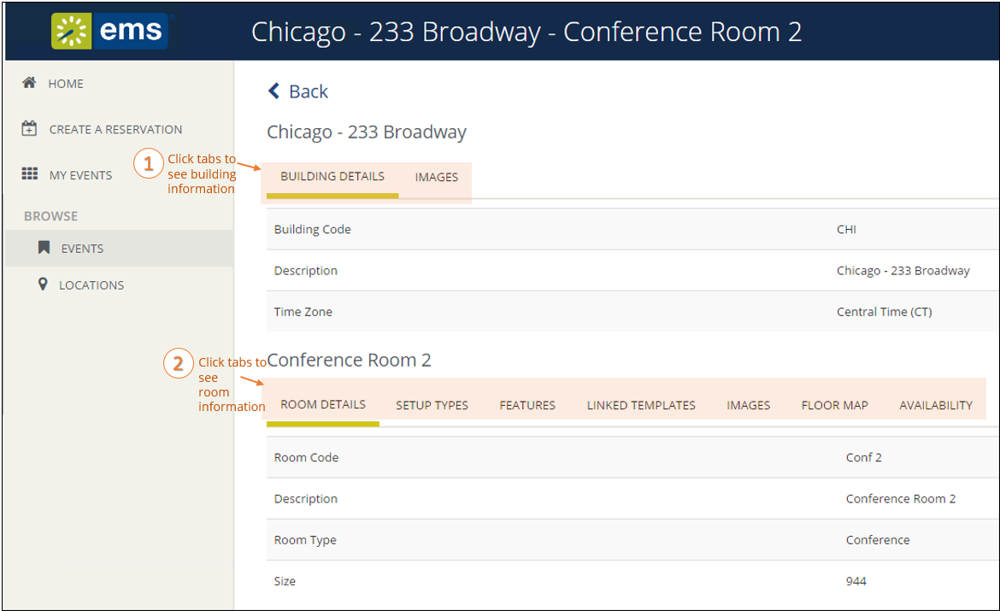

Tip: Filters along the top of the Browse Locations page enable you to quickly focus the view on rooms in a specific time frame and by room features, such as equipment, room type, and geographic location. This helps you find available space to quickly meet your requirements. To add and remove location filters, click the Add/Remove Locations option, which presents a Locations filter popup where you can select by building, area, and view.


Tip: The LINKED TEMPLATES tab may be available depending on your implementation. This option will allow you to make a reservation for this room. Once you locate a room you wish to book, use this shortcut to quickly begin the process.
Anywhere you see "..." on a room name, you can click to expand and see the full room name.